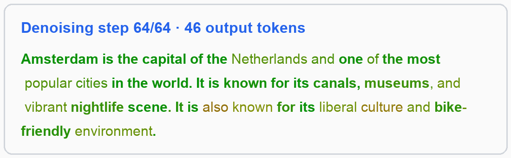
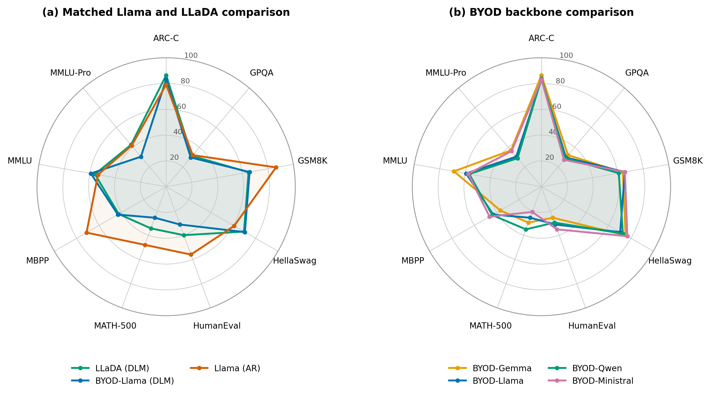
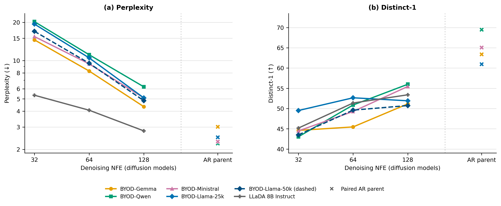

BYOD: Build your own diffusion language model in Google Colab
Can an existing instruction model learn to generate text through diffusion in a few hours on one GPU?
In BYOD: Build Your Own DLM, we convert Gemma 2 9B, Llama 3.1 8B, Qwen2.5 7B, and Ministral 8B into bidirectional masked-diffusion language models. Every pretrained weight stays frozen: training updates only LoRA adapters, representing 4.1–5.8% of the final model parameters. The four primary conversions each took 3.1–4.0 hours on one GPU in Google Colab.
We want other people to be able to train, inspect, and experiment with these models too. The training notebook and interactive demos are available now.
Train your own model
Open the training notebook in Google Colab · Code and instructions
The notebook takes you from selecting a model to trying your own trained adapter:
- Choose a model and a training profile.
- Use the provided tokenized training data, or configure your own instruction–response dataset.
- Train while watching the loss curves, with optional Google Drive storage.
- Open the interactive inference interface in step 6 and watch your model denoise its answers. You can also load a saved interrupted run.
Quick mode uses smaller Llama, Gemma, or Qwen models and rank-128 LoRA for initial experiments. Paper mode uses the original 7B–9B models and rank-1024 adapters; our paper runs used a 96 GB NVIDIA RTX PRO 6000. Quick mode does not reproduce the paper scores, and available Colab hardware determines which profile you can run.
Try the models before training
These demos run directly in your browser:
Instead of appending one token at a time, the model starts with a masked answer and fills multiple positions through successive denoising steps. Try the same prompt with different step budgets and watch where tokens appear.

From Figure 7 of the paper: BYOD-Gemma generation at 64 denoising steps on a 64-token canvas. Greener tokens had higher sampling probability when retained.
For related demos, try our earlier LAD model, LLaDA-8B-Instruct, and LLaDA2.2-mini. LLaDA2.2 is an additional demo, outside this paper’s evaluation. The hosted demos also include experimental decoding options beyond the paper’s evaluation settings.
What did we find?
The same conversion recipe works across all four families. All four generate from fully masked answers and use information to the right of a masked position in our controlled attention test.
BYOD-Gemma comes within 1.3 percentage points of LLaDA on our nine-task average: 50.6% versus 51.9%, evaluated in the same harness. The unchanged AR parents still perform better on average, with particularly large conversion gaps in mathematics and code.

Figure 1: Task-level accuracy in the matched evaluation. Performance depends on both the task and the converted model family.
Open-ended generation remains the main challenge. At 64 denoising steps for 128 output tokens, externally scored perplexity is 8.3–11.1 for BYOD, versus 4.1 for LLaDA and 2.2–3.0 for the AR parents. Increasing the denoising budget generally helps, but a low-cost conversion still leaves a quality gap.

Figure 3: Generation quality across inference budgets. Lower perplexity and higher Distinct-1 are better; crosses mark the AR parents.
We hope BYOD makes diffusion-model experiments easier to start: change a backbone, try different training data, inspect a denoising trajectory, and see what improves.
Start with the Colab notebook · Read the paper · Get the code
BYOD: Train and try your own diffusion language model
We’re sharing BYOD: Build Your Own DLM, a recipe for converting existing instruction models into bidirectional masked-diffusion language models using only LoRA training.
Our Gemma 2 9B, Llama 3.1 8B, Qwen2.5 7B, and Ministral 8B conversions each took 3.1–4.0 hours on one Colab GPU, with every pretrained weight frozen.
Want to train one yourself? Open our Google Colab notebook. Select a model, train while watching the loss curves, then open the live inference interface in step 6. You can use the provided data or configure your own instruction–response dataset. Quick mode offers smaller models for experiments; paper mode needs a high-memory GPU, and our runs used 96 GB. Quick mode does not reproduce the paper scores.
Try the trained models in your browser: Gemma · Llama · Qwen · Ministral
BYOD-Gemma at 64 denoising steps, from Figure 7. Try changing the step budget in the demos.
BYOD-Gemma reaches 50.6% average accuracy across nine tasks, compared with 51.9% for LLaDA-8B-Instruct in the same harness. The AR parents remain stronger on average, and open-ended fluency is still a clear limitation.
Figure 1: Matched benchmark results. The largest gaps with AR occur in mathematics and code.
We hope the notebook and demos make it easier for others to explore diffusion training, new backbones, and better decoding.
Paper · Code · Train in Colab